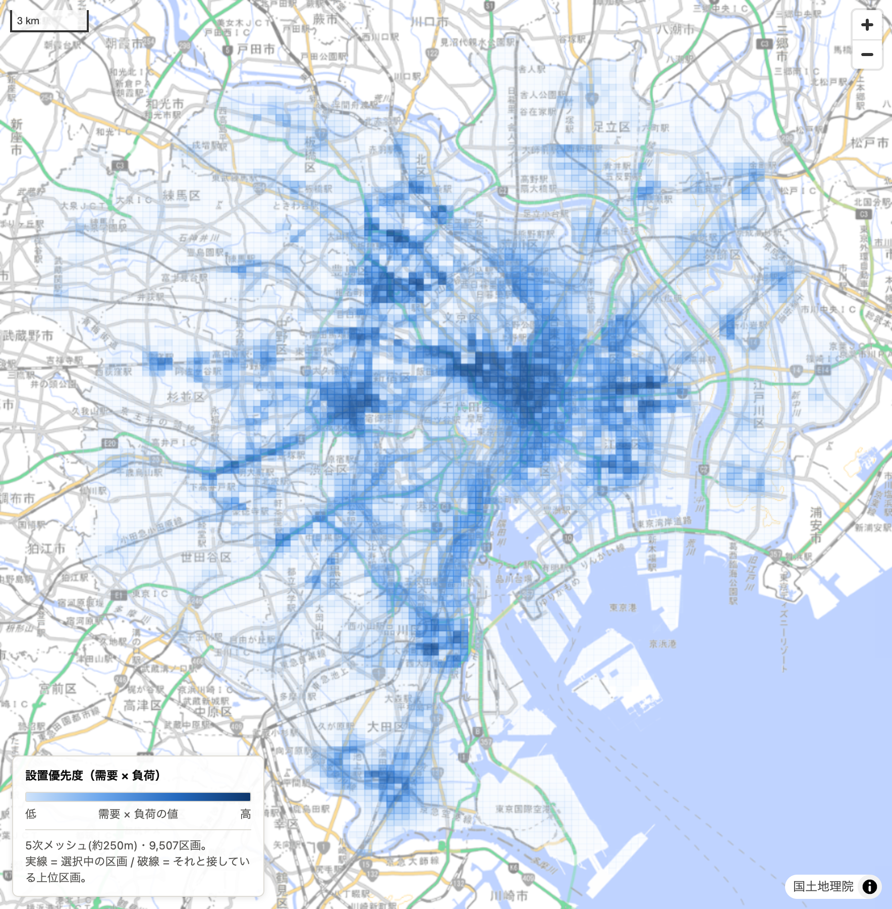
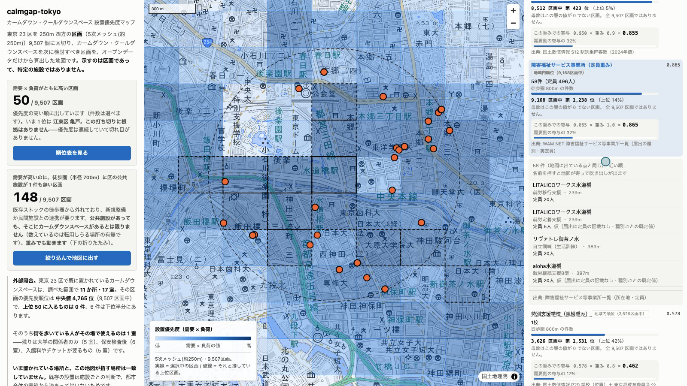
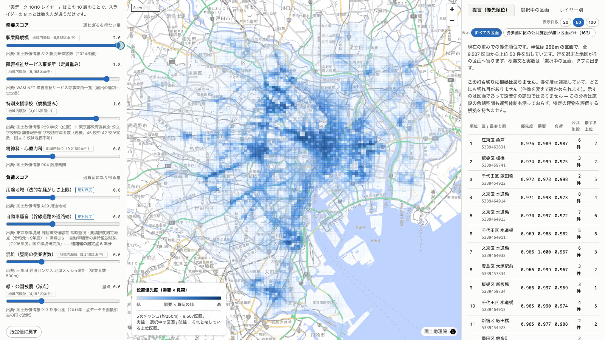
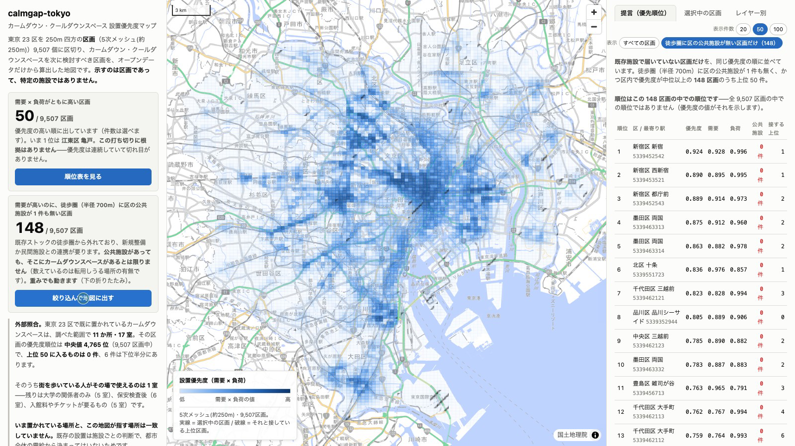

東京のどこに、次のカームダウンスペースを置く？
CalmGap
東京 23 区のどこに設置すると効果的かを、公開データから検討するための地図です。
人が集まり、支援や移動の拠点となる場所
過負荷につながりやすい環境
設置優先度 ＝ 需要 × 負荷
足し算ではなく掛け算。片側だけ極端な場所は上位に入りません。 データの層は 10 レイヤー、スコアに入るのが 8 層です。
これまでの設置は施設や建物の単位。
9,507 区画から「まず検討する場所」を絞り込みます。

既存の設置方法を否定するものではなく、「次にどこを検討するか」を考えるための補助線です。 23 区で確認できた既存の設置は 11 か所（公表情報からの手集計）。
順位と、その内訳
需要と負荷のどの層がどれだけ効いているか
数えたものの実数と出典
徒歩圏の事業所・学校・駅・医療機関の件数
その施設が地図のどこにあるか
一覧の 1 件を押すと、地図の吹き出しに詳細

第 2 位 文京区 水道橋（5339464014）。障害福祉サービス事業所
58 件・定員計 496 人。表の件数・地図の点・一覧の行数は全 9,507 区画で一致を検査。
同じ東京の地図に対して、何を重視するかを変えて比較できます。
4 つのプリセットすべてで上位 20 件に入る区画
重み 8 個を ±30% 揺さぶって上位 10 件に残る割合

プリセットを「通所先・通学先の近く」へ切り替え、さらに駅乗降規模のつまみを動かす。 順位表も地図の色も同時に変わります。唯一の正解は出しません。
重み以外の固定値 76 個でも測っています。上位の顔ぶれは特別支援学校 1 層でほぼ決まります （23 区に 45 校しかないため）。順位を固定の答えとして読まないでください。
9,507 区画のうち、需要が高いのに徒歩 700m に区の公共施設が 1 件も無い場所。
全体の上位 50 区画とは 1 件も重なりません。
公共施設があっても、そこにカームダウンスペースがあるとは限りません。 この数も重みで動きます。

画面の「絞り込んで地図に出す」を押すと、上位が消えて斜線の 148 区画が現れます。
なぜ駅、なぜ都営地下鉄か
さらに具体的な例：どの重み設定でも残る駅
4 つの重み設定それぞれで上位 50 区画を出し、最寄り駅が都営 4 路線と一致する数を数えます （22 区画・9 駅／22 区画・9 駅／25 区画・10 駅／19 区画・8 駅）。 2 つ以上で挙がったのは 9 駅、3 つ以上は 8 駅、 4 つすべては 神保町の 1 駅。
どの立場から見ても候補に残る駅なら、まず現地調査をする候補として優先できます。
CalmGap が担うのは、候補を絞るところまで。 設置を決めるのは行政と鉄道事業者で、この道具がそれを代替するわけではありません。 導入が決まった話ではなく、東京都交通局への照会も合意もしていません。
この道具が使われることだけが目的ではありません。 オープンデータから「どこに置くと効果的か」を定量的に探る考え方が 行政や事業者に広がって、実際に設置場所が増えることが理想です。
必要な人が、街中で安心して少し休める場所を増やしたい。
カームダウンスペースは感覚過敏のある人だけのものではありません。 高齢者・妊婦・体調のすぐれない人にも使える場所になり得ます。
公開データだけ
国土数値情報／WAM NET／e-Stat 経済センサス／東京都オープンデータカタログ（23 区の公共施設）／ 東京都環境局・東京都教育庁／環境GIS＋
Python
GeoPandas・pandas・NumPy・Shapely・pyproj。住所からの座標化、距離重み付き内挿、 250m メッシュへの集計、重み付き合成
TypeScript
MapLibre GL JS・Vite。重みの再計算はブラウザ側なので、 スライダーを動かすと即座に順位と地図が変わる
Cloudflare Workers
静的配信。ETL・スコアリング・地図 UI・検証ツールは OSS
同じ数式が Python と TypeScript に 2 つあります。重みを画面で動かすためです。 全 9,507 区画で両者のスコアが一致することを毎回検査しており、 表の件数・地図の点・一覧の行数の一致も同じように検査しています。
本作の数値・地図・順位は、下記データを編集・加工したものです（対象の絞り込み・名寄せ・ 住所からの座標化・距離重み付き内挿・250m メッシュへの集計・重み付き合成）。 加工の責任は本作にあり、出典の提供元は加工結果について一切の責任を負いません。
link_check.py と doc_numbers.py が、リンク先と資料の数値を検査